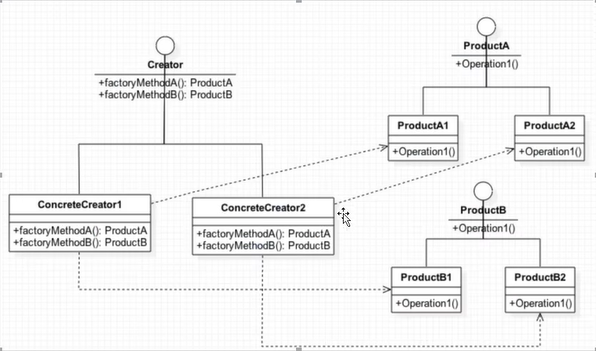
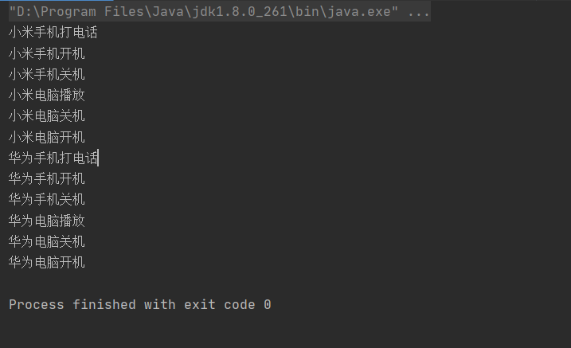
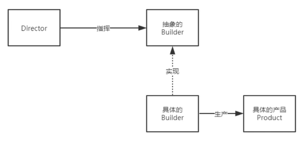
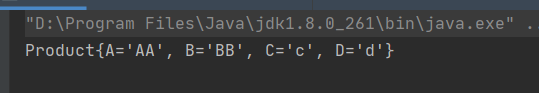
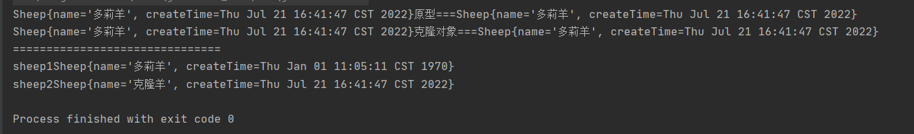
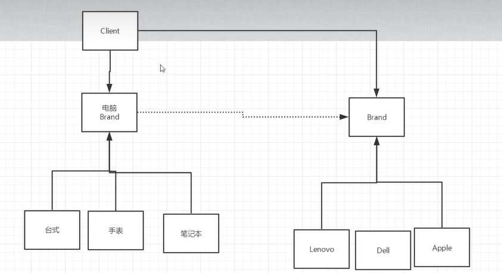

这篇文章是基于 狂神说视频的总结，仅供个人学习和复习用。
单例模式
单例模式是指在内存中有且只会创建一次对象的设计模式，在程序中多次使用同一个对象且作用相同的时候，为防止频繁的创建对象，单例模式可以让程序在内存中创建一个对象，让所有的调用者都共享这一单例对象。
饿汉式
初始化的时候便新建一个对象。
package singleton;
//饿汉单例模式
public class Hungry extends Object{
private Hungry(){ //私有化构造，这样别人无法new一个新的对象
}
private final static Hungry HUNGRY = new Hungry();
public static Hungry getInstance(){
return HUNGRY;
}
}
懒汉式
当被调用到的时候才新建对象
package singleton;
//懒汉式
public class Lazy {
private Lazy(){
}
private static Lazy LAZY;
private static Lazy getInstance(){
if(LAZY == null){
LAZY = new Lazy();
}
return LAZY;
}
//以上方式在多线程情况下存在问题，需要加锁
}双重检查锁(DCL懒汉式)
多线程模式下避免重复创建对象。
package singleton;
//多线程懒汉式
public class LazyM {
private LazyM(){
System.out.println("当前线程===== "+Thread.currentThread().getName());
}
private volatile static LazyM LAZYM; //避免指令重排 保证顺序性。
//双重检测锁模式 DCL懒汉式
public static LazyM getInstance(){
if(LAZYM == null){
synchronized (LazyM.class){
if(LAZYM == null){
LAZYM = new LazyM();
}
}
}
return LAZYM;
}
//多线程并发
public static void main(String[] args) {
for (int i =0; i<10; i++){
new Thread(() ->{
LazyM.getInstance();
}).start();
}
}
}
volatile关键字
当我们在 new LazyM()的时候，其实是有可能发生指令重排的。
1 分配内存空间
2 执行构造方法，初始化对象
3 把这个对象指向这个空间
用volatile关键字可以避免当对象还没指向这个空间时被其它线程返回出去。
静态内部类
package singleton;
//静态内部类
public class Holder {
private Holder(){
}
public static Holder getInstance(){
return InnerClass.HOLDER;
}
public static class InnerClass{
private static final Holder HOLDER = new Holder();
}
}
枚举类单例
由于以上的方法其实都可以通过反射去破坏，以上的方式通过反射可以创建出两个实例，所以考虑到用枚举的方式可以应对以上的问题。
package singleton;
// enum 本身也是一个class类
public enum EnumSingle {
INSTANCE; //单元素的枚举类型已经成为实现Singleton的最佳方法
public static EnumSingle getInstance(){
return INSTANCE;
}
public void doSomething(){
System.out.println("业务方法");
}
public static void main(String[] args) {
EnumSingle.INSTANCE.doSomething(); //直接通过枚举调用
}
}
工厂模式
工厂模式实现了创建者和调用者分离，实例化对象不使用new，用工厂方法代替。将选择实现类，创建对象统一管理和控制。从而将调用者跟我们的实现类解耦。
三种模式
- 简单工厂模式
用来生产同一等级结构中的任意产品(对于增加新的产品，需要覆盖已有代码) - 工厂方法模式、
用来生产同一等级结构中的固定产品(支持增加任意产品) - 抽象工厂模式
围绕一个超级工厂创建其它工厂。该超级工厂又称为其它工厂的工厂。
简单工厂模式
简单工厂模式使我们不用关系具体对象如何创建，只需要通过工厂调用即可。但是不方便扩展，不满足开闭原则。(只做增加不做修改)
//汽车接口
package factory.simple;
public interface Car {
void name();
}
-------------------------------------------
//具体汽车类
package factory.simple;
public class FengTian implements Car {
@Override
public void name() {
System.out.println("丰田汽车");
}
}
-------------------------------------------
package factory.simple;
public class BenTian implements Car {
@Override
public void name() {
System.out.println("本田汽车");
}
}
------------------------------------------
//工厂类
package factory.simple;
public class CarFactory {
//方法一
public static Car getCar(String car){
if(car.equals("丰田")){
return new FengTian();
}else if(car.equals("本田")){
return new BenTian();
}else {
return null;
}
}
//方法二
public static Car getFenTian(){
return new FengTian();
}
public static Car getBenTian(){
return new BenTian();
}
}
-------------------------------------------
package factory.simple;
public class Consumer {
public static void main(String[] args) {
Car car = CarFactory.getCar("丰田");
Car car2 = CarFactory.getCar("本田");
car.name();
car2.name();
}
}工厂方法模式
通过各自的类都有一个工厂类去实现统一的工厂接口，那么当需要增加的时候只需要新增一个工厂类并实现接口即可，实现开闭原则。(虽然代码量增加了但是在一个项目中大量用到代码并需要修改时，我们只需要修改对应工厂类的代码即可。方便后期维护。)
//工厂接口
package factory.method;
public interface CarFactory {
Car getCar();
}
-------------------------------------
//各自工厂类
package factory.method;
public class FengTianFactory implements CarFactory{
@Override
public Car getCar() {
return new FengTian();
}
}
--------------------------------------
package factory.method;
public class BenTianFactory implements CarFactory{
@Override
public Car getCar() {
return new BenTian();
}
}
-------------------------------------
package factory.method;
import factory.simple.CarFactory;
public class Consumer {
public static void main(String[] args) {
Car car = new BenTianFactory().getCar();
Car car2 = new FengTianFactory().getCar();
car.name();
car2.name();
}
}抽象工厂模式
抽象工厂模式提供了一个创建一系列相关或者相互依赖对象的接口，无需指定他们的具体的类。
适用场景：
- 客户端(应用层)不依赖于产品类实例如何被创建，实现等细节。
- 强调一系列相关的产品对象(属于同一产品簇)一起使用创建对象需要大量的重复代码。
- 提供一个产品类的库，所有的产品以同样的接口出现，从而使得客户端不依赖于具体的实现。
优点：
- 具体产品在应用层的代码隔离，无需关心创建细节。
- 将一个系列的产品统一到一起创建。
缺点：
- 规定了所有可能被创建的产品集合，产品簇中扩展新的产品困难；
- 增加了系统的抽象性和理解难度

总工厂接口以及不同产品的工厂接口
//总接口
package factory.AbstractFactory;
public interface IProductFactory {
IPhoneProduct productPhone();
IComputerProduct productComputer();
}
-------------------------------
package factory.AbstractFactory;
public interface IPhoneProduct {
void call();
void start();
void shutdown();
}
-------------------------------
package factory.AbstractFactory;
public interface IComputerProduct {
void start();
void shutdown();
void play();
}不同的工厂
package factory.AbstractFactory;
public class XiaomiProductFactory implements IProductFactory{
@Override
public IPhoneProduct productPhone() {
return new XiaomiPhone();
}
@Override
public IComputerProduct productComputer() {
return new XiaomiComputer();
}
}
-------------------------------------
package factory.AbstractFactory;
public class HuaweiProductFactory implements IProductFactory{
@Override
public IPhoneProduct productPhone() {
return new HuaweiPhone();
}
@Override
public IComputerProduct productComputer() {
return new HuaweiComputer();
}
}工厂的具体实现
package factory.AbstractFactory;
public class XiaomiComputer implements IComputerProduct {
@Override
public void start() {
System.out.println("小米电脑开机");
}
@Override
public void shutdown() {
System.out.println("小米电脑关机");
}
@Override
public void play() {
System.out.println("小米电脑播放");
}
}
----------------------------------
package factory.AbstractFactory;
public class XiaomiPhone implements IPhoneProduct{
@Override
public void call() {
System.out.println("小米手机打电话");
}
@Override
public void start() {
System.out.println("小米手机开机");
}
@Override
public void shutdown() {
System.out.println("小米手机关机");
}
}
----------------------------------------
package factory.AbstractFactory;
public class HuaweiPhone implements IPhoneProduct{
@Override
public void call() {
System.out.println("华为手机打电话");
}
@Override
public void start() {
System.out.println("华为手机开机");
}
@Override
public void shutdown() {
System.out.println("华为手机关机");
}
}
---------------------------------------
package factory.AbstractFactory;
public class HuaweiComputer implements IComputerProduct{
@Override
public void start() {
System.out.println("华为电脑开机");
}
@Override
public void shutdown() {
System.out.println("华为电脑关机");
}
@Override
public void play() {
System.out.println("华为电脑播放");
}
}调用
package factory.AbstractFactory;
public class Consumer {
public static void main(String[] args) {
XiaomiProductFactory xiaomiProductFactory = new XiaomiProductFactory();
IPhoneProduct iPhoneProduct = xiaomiProductFactory.productPhone();
iPhoneProduct.call();
iPhoneProduct.start();
iPhoneProduct.shutdown();
IComputerProduct iComputerProduct = xiaomiProductFactory.productComputer();
iComputerProduct.play();
iComputerProduct.shutdown();
iComputerProduct.start();
//实现不需要改变只需要改变工厂
HuaweiProductFactory huaweiProductFactory = new HuaweiProductFactory();
iPhoneProduct = huaweiProductFactory.productPhone();
iPhoneProduct.call();
iPhoneProduct.start();
iPhoneProduct.shutdown();
iComputerProduct = huaweiProductFactory.productComputer();
iComputerProduct.play();
iComputerProduct.shutdown();
iComputerProduct.start();
}
}结果

建造者模式
建造者模式也属于创建型模式，它提供了一种创建对象的最佳方式。
定义与作用
将一个复杂对象的构建与它的表示分离，使得同样的构建过程可以创建不同的表示。在用户不知道对象的建造过程和细节的情况下就可以直接创建复杂对象。
用户只需要给出指定复杂对象的类型和内容，建造者模式负责按顺序创建复杂对象(把内部的建造过程和细节隐藏起来)

package builder;
//抽象的建造者
public abstract class Builder {
abstract Product Build();
abstract Builder buildA(String msg);
abstract Builder buildB(String msg);
abstract Builder buildC(String msg);
abstract Builder buildD(String msg);
}
----------------------------------------------
package builder;
//产品
public class Product {
private String A = "a";
private String B = "b";
private String C = "c";
private String D = "d";
public String getA() {
return A;
}
public void setA(String a) {
A = a;
}
public String getB() {
return B;
}
public void setB(String b) {
B = b;
}
public String getC() {
return C;
}
public void setC(String c) {
C = c;
}
public String getD() {
return D;
}
public void setD(String d) {
D = d;
}
@Override
public String toString() {
return "Product{" +
"A='" + A + '\'' +
", B='" + B + '\'' +
", C='" + C + '\'' +
", D='" + D + '\'' +
'}';
}
}
----------------------------------------------
package builder;
//具体的建造者
public class Worker extends Builder{
private Product product;
public Worker(){
product = new Product();
}
@Override
Product Build() {
return product;
}
@Override
Builder buildA(String msg) {
product.setA(msg);
return this;
}
@Override
Builder buildB(String msg) {
product.setB(msg);
return this;
}
@Override
Builder buildC(String msg) {
product.setC(msg);
return this;
}
@Override
Builder buildD(String msg) {
product.setD(msg);
return this;
}
}
------------------------------------------------
package builder;
public class test {
public static void main(String[] args) {
//建造者
Worker worker = new Worker();
//链式编程自由的创建产品
Product product = worker.buildA("AA").buildB("BB").Build();//因为在Worker类的方法中一直都有返回当前Worker对象所以可以使用链式编程
//通过上面的建造者模式可以使我们创建Product对象时可以根据自己要求改变参数，并不用我们实现所有参数。繁琐的操作由Worker类帮我们实现。
System.out.println(product.toString());
}
}
原型模式
核心：实现Cloneable接口，重写clone()方法。
优点：
- Java 自带的原型模式基于内存二进制流的复制，在性能上比直接 new 一个对象更加优良。
- 可以使用深克隆方式保存对象的状态，使用原型模式将对象复制一份，并将其状态保存起来，简化了创建对象的过程，以便在需要的时候使用（例如恢复到历史某一状态），可辅助实现撤销操作。
缺点：
- 需要为每一个类都配置一个 clone 方法
- clone 方法位于类的内部，当对已有类进行改造的时候，需要修改代码，违背了开闭原则。当实现深克隆时，需要编写较为复杂的代码，而且当对象之间存在多重嵌套引用时，为了实现深克隆，每一层对象对应的类都必须支持深克隆，实现起来会比较麻烦。因此，深克隆、浅克隆需要运用得当。
package prototype;
import java.util.Date;
//原型
public class Sheep implements Cloneable{ //重写Object类的clone()方法必须实现Cloneable接口，相当于一个标记接口
private String name;
private Date createTime;
@Override
protected Object clone() throws CloneNotSupportedException {//参数中有引用对象则需要将对象也克隆，否则克隆出来的实力共同引用了同一个参数对象。（深克隆）
Sheep sheep = (Sheep)super.clone();//新克隆的对象中的参数对象也克隆
sheep.createTime = (Date)createTime.clone();//Date类中也实现了Cloneable接口
return sheep;//注意即使你在这里强转了，在方法里用的Object接收(Object clone())还是返回的Object
}
public Sheep(String name, Date createTime) {
this.name = name;
this.createTime = createTime;
}
public String getName() {
return name;
}
public void setName(String name) {
this.name = name;
}
public Date getCreateTime() {
return createTime;
}
public void setCreateTime(Date createTime) {
this.createTime = createTime;
}
@Override
public String toString() {
return "Sheep{" +
"name='" + name + '\'' +
", createTime=" + createTime +
'}';
}
}package prototype;
import java.util.Date;
public class CloneSheep {
public static void main(String[] args) throws CloneNotSupportedException {
Date date = new Date();
Sheep sheep = new Sheep("多莉羊",date);
System.out.println(sheep.toString() + "原型==="+sheep);
Sheep sheep2 = (Sheep)sheep.clone();//clone()返回的是Object类需要强转
System.out.println(sheep2.toString() + "克隆对象==="+sheep2);
sheep2.setName("克隆羊");
date.setTime(11111111);
System.out.println("===============================");
System.out.println("sheep1"+sheep);
System.out.println("sheep2"+sheep2);
}
}结果

适配器模式
参考：菜鸟教程
将一个类的接口转换成客户希望的另外一个接口。适配器模式使得原本由于接口不兼容而不能一起工作的那些类可以一起工作。
优点
1、可以让任何两个没有关联的类一起运行。 2、提高了类的复用。 3、增加了类的透明度。 4、灵活性好。
缺点
1、过多地使用适配器，会让系统非常零乱，不易整体进行把握。比如，明明看到调用的是 A 接口，其实内部被适配成了 B 接口的实现，一个系统如果太多出现这种情况，无异于一场灾难。因此如果不是很有必要，可以不使用适配器，而是直接对系统进行重构。 2.由于 JAVA 至多继承一个类，所以至多只能适配一个适配者类，而且目标类必须是抽象类。
package AdapterPattern;
//抽象连接的接口，新增的适配器需要实现该接口
public interface AdvancedConnection {
void connectToComputer();
}package AdapterPattern;
public class Usb {
public void connectToUSB(){
System.out.println("连接上USB了");
}
}package AdapterPattern;
public class USBAdapter implements AdvancedConnection{
private Usb usb;
public USBAdapter(Usb usb){ //通过构造方法插入适配对象
this.usb=usb;
}
@Override
public void connectToComputer() { //在适配器中调用适配对象的方法
usb.connectToUSB();
}
} package AdapterPattern;
public class Computer {
public void connectToUSB(USBAdapter usbAdapter){//通过适配器调用另一个类
usbAdapter.connectToComputer();
}
public static void main(String[] args) {
Computer computer = new Computer();
Usb usb = new Usb();
USBAdapter usbAdapter = new USBAdapter(usb);
computer.connectToUSB(usbAdapter);//连接相关适配器，使computer对象可以调用Usb类的方法。
}
}桥接模式
优点： 1、抽象和实现的分离,把多角度分类分离出来，让它们独立变化，减少它们之间耦合。 2、优秀的扩展能力。 3、实现细节对客户透明。
缺点：桥接模式的引入会增加系统的理解与设计难度，由于聚合关联关系建立在抽象层，要求开发者针对抽象进行设计与编程。

package bridge;
public interface Brand {
void info();
}package bridge;
//小米品牌
public class Xiaomi implements Brand{
@Override
public void info() {
System.out.print("小米");
}
}package bridge;
//苹果品牌
public class Apple implements Brand{
@Override
public void info() {
System.out.print("苹果");
}
}package bridge;
//抽象的电脑类型
public abstract class Computer {
protected Brand brand;
public Computer(Brand brand){
this.brand = brand;
}
public void info(){
brand.info();
}
}package bridge;
public class Laptop extends Computer{
public Laptop(Brand brand) {
super(brand);
}
public void info(){
super.info();
System.out.println("笔记本");
}
}package bridge;
public class Test {
public static void main(String[] args) {
Computer computer = new Desktop(new Apple());
computer.info();
Computer computer2 = new Desktop(new Xiaomi());
computer2.info();
}
}